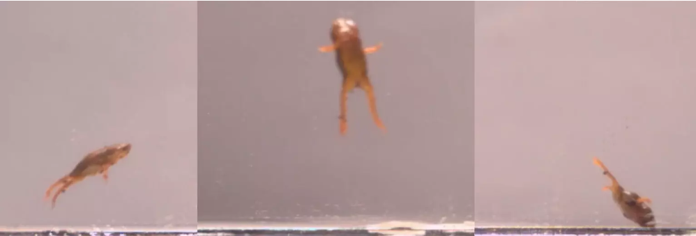
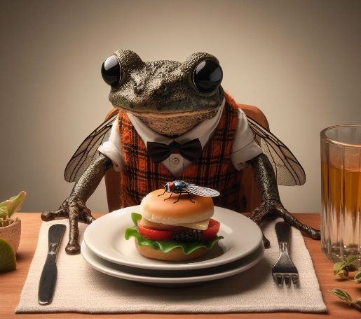
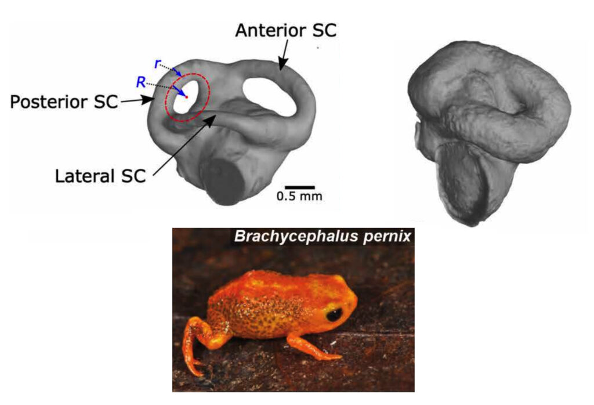

Las ranas que no saben saltar...
Si al pensar en una rana lo primero que piensas es en salto rapidos y agiles, este no es tu lugar... con sus musculosas patas se especializan en saltar para sobrevivir. En cambio, las ranas brachycephalus son como gatos cayendose de un mueble: no muy elegante y algo torpes.
Siendo originarias de Brasil donde la vegetación es densa y la humedad es alta. Estas son increíblemente pequeñas, casi del tamaño de una moneda, compensando su tamaño y torpeza con sus coloridos aspectos y probablemente una buena personalidad (algunas siendo tóxicas... literalmente).
Cuando llega el momento de saltar, es posible que terminen en cualquier lugar menos donde planeaban ir. No sería raro ver a una Brachycephalus intentar un salto elegante y terminar boca abajo.

Se alimentan principalmente de insectos y otros invertebrados pequeños, como hormigas y ácaros. Su método de caza puede parecer algo torpe, pero es efectivo: saltan (a veces de manera errática) y atrapan a su presa con su lengua pegajosa.
(recreacion, las ranas reales no usan corbata)
A diferencia de muchas otras ranas, estas no tienen fase de renacuajo en agua. Los huevos se desarrollan completamente en la hojarasca, y las crías emergen como miniaturas de los adultos. La temporada de reproducción suele estar ligada a las lluvias estacionales, cuando hay mayor humedad para mantener los huevos y a las crías frescas y protegidas.
La razón
El anfibio, conocido cómo botón de oro o rana calabaza, es del tamaño de la punta de un lápiz y falla en sus saltos debido al tamaño de sus oídos. En particular, por los canales semicirculares de ellos. Los canales semicirculares son tres tubos muy pequeños, ubicados en el oído interno, que contienen un líquido que nos ayuda, a la gran mayoría de seres vivos, a mantener el equilibrio.
